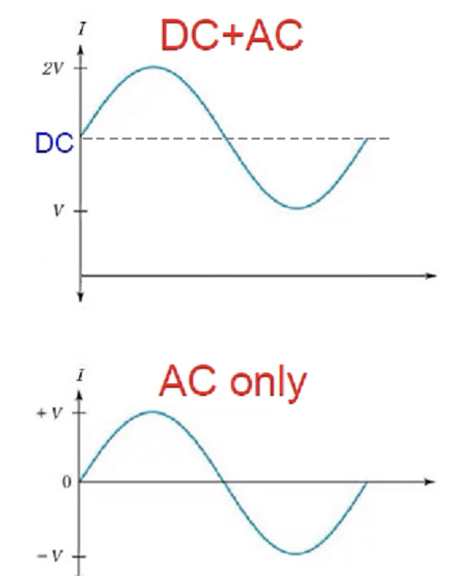
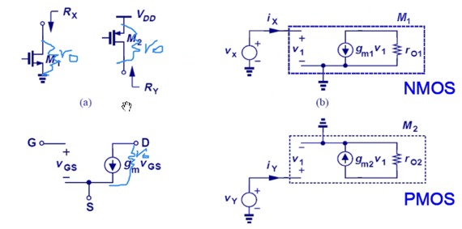

충남대학교 컴퓨터공학과 남병규 교수님의 "전자회로" 강의를 필기한 내용입니다.
이 문서는 보관이 목적이고, 관리되지 않습니다. 따라서 잘못된 정보가 포함되어 있거나 순서가 뒤죽박죽일 수 있습니다.
등가회로
- 이전에 배운 회로를 분석하는 방법(KCL, KVL등등)은 수동소자 에 대해 분석하는 일인데 트렌지스터는 능동소자 이기 때문에 앞에서 배운것들을 적용시키지는 못한다
- 그래서 저 트랜지스터의 기능을 수동소자들의 조합으로 표현하는 것을 등가회로라고 말하며 이렇게트랜지스터는 등가회로로 전환한 다음 회로이론으로 회로를 분석하게 된다
소신호모델, 대신호모델

- 대신호모델(Large Signal Model) : 신호의 진폭이 큰 경우
- 트랜지스터를 가지고 증폭을 하려 하는데 신호가 이미 크다면 증폭할 필요가 없다
- Vgs와 전류의 곡선에서 Vgs에 따라 전류가 이차함수적으로 중가하는데 원 신호가 왜곡되게 된다
- 만약에 비례관계면 x축의 변화와 동일한 파형으로 y축으로 나올텐데 제곱관계이기 때문에 x축의 변화와 다른 파형으로 y축으로 나온다
- 따라서 대신호모델은 별로 신경쓰지 않는다
- 소신호모델(Small Signal Model) : 신호의 진폭이 작은 경우
- 얘는 입력신호가 작기 때문에 증폭할 필요가 있음
- 그리고 x축의 변화가 작으므로 이것은 제곱관계이긴 하지만 비례관계와 유사하기 때문에 왜곡이 적음
- 따라서 소신호 모델을 주로 사용하게 된다
- 얘는 AC Model 이라고도 한다
- 따라서 얘는 Vgs에 전류가 선형적으로 비례하는 것으로 근사가 가능하다 - 선형근사라고 함
소신호모델에서 전류와 전압

- 소신호 모델에서는 Vgs와 I는 비례하게 되는데 이때의 비례상수 가 gm이다
- 즉,
Ids = gm * Vgs가 되는 셈 - gm은 결국에는 기울기기 때문에 Vgs-I 곡선에서 특정 위치에서의 미분값으로 구할 수 있다
- 얘를 의미론적으로 이해해보면 gm이 클때는 같은 전압을 걸어줘도 큰 전류가 흐르고 작을때는 작은 전류가 흐름
- 전압은 GS에 걸었는데 전류는 DS로 흐른다 - 이렇게 전압을 걸어준 노드와 전류가 흐르는 노드가 다르다는 의미로 저 m이 붙는 것
gm = Ids / Vgs인데컨덕턴스(C) = 저항의 역수 = I / V이므로 이것도 전류가 얼마나 잘 흐르냐의 척도인 conductance의 일종이라고 할 수 있고- 저 다르다는 속성때문에 trans를 붙여 gm을 Transconductance라고도 부른다

- Vgs로 미분해주면 첫번째 수식이 나온다
- 그리고 Vgs - Vth를 Id로 표현하면 두번째 수식이 나오고
- 2unCox를 Id와 Vgs - Vth로 나타낸 것이 세번째 수식이다
소신호모델에서의 저항


- 포화상태에서 Channel length modulation에 의해 전류가 조금씩 흐를때 이때의 기울기 역수를 ro 라고 한다 - 이것도 일종의 저항이기 때문
- 얘는 결국에는
저항 = 전압 / 전류인데 저 기울기는 전류 / 전압이므로 역수를 취한 것과 같다 - 얘는 이제 뭔의미냐면 ro가 클수록 전류가 잘 안바뀌는 것이므로 완벽하게 포화되는 것이도 작을수록 포화되어도 전류가 잘 바뀌는 것으로 엉성하게 포화되는 것을 말한다
- 얘는 이제 DC저항이 아니고 AC저항이기 때문에 전류의 변화가 어렵도록 만드는 저항의 역할을 한다
- 그리고 얘는 Vds에 대한 Ids의 관계이므로 입출력 노드가 같아 trans라는 말이 안붙게 되는 것 - 그냥 output resistance 라고 해서 ro 라고 표현하는 것이다
Supply Voltages
- 이제는 전압을 회로에 그릴때 배터리 기호 대신 VDD, VSS 의 용어를 사용한다
- VDD : 배터리가 인가해주는 가장 높은 전압
- VSS : 배터리가 인가해주는 가장 낮은 전압
- 그리고 보통은 최소전압을 0V, GND로 표현했었는데 전압은 전위차이기때문에 VSS가 0이 아닌 값을 가질 수도 있다
AC Ground

- 보면 첫번째 그림은 DC를 기준으로 변화하고 있으므로 DC + AC라고 할 수 있다
- 근데 DC는 그냥 값일 뿐 아무런 정보도 전달하지 않는다 - 실제로 정보를 전달하는 것은 저 변화에 의한 AC이므로
- 따라서 그냥 DC전압도 GND로 취급해 0으로 만들어 AC만 생각하는 것을 AC Ground라고 한다
- DC전압을 GND(0)로 취급해 AC만 생각해서 회로를 분석하는 것을 AC Model 이라고 하는 것 - 회로에서도 DC는 GND(0)로 생각한다
트랜지스터의 전류원으로써의 기능

- NMOS, PMOS모두 포화상태일때 전류원으로의 기능을 하며 그때의 전압관계는 빨간색 글씨와 같다
NMOS, PMOS의 등가회로

- gm과 ro를 반영한 NMOS, PMOS의 등가회로는 오른쪽과 같이 나타내진다
- 근데 결국에는 위아래로 비교해보면 동일하다는 것을 알수 있다 - NMOS든 PMOS든 동일한 등가회로가 나옴